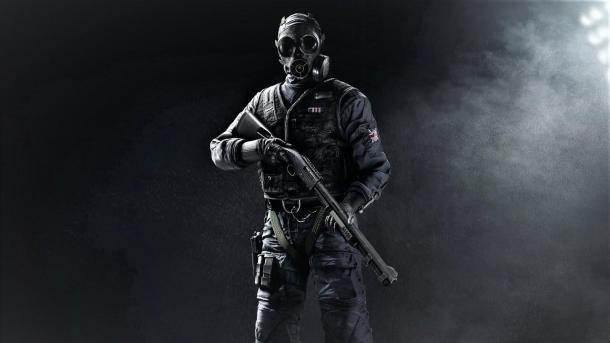

Оперативник Rainbow Six Siege - Tatcher
- Гаджет: ЭМИ-гранаты
- Броня: 2/3
- Скорость: 2/3
Отсутствие возможности пропилить брешь в стене из-за наличия в команде защитников бойцов Mute или Bandit – неприятный момент. На этот случай всегда есть Thatcher, который без проблем справится c вражескими девайсами. Этот оперативник использует ЭМИ-гранаты, которые уничтожают электронику соперника даже находясь за стеной от оной. Касается это, впрочем, не только генераторов Mute или Bandit . ЭМИ-гранаты также справляются с GU ловушками, капканами, дронами ECHO и другими электронными устройствами. Единственно чего стоит опасаться Thatcher – СОГ (Система Отражения Гранат) оперативника Jager. Эти пушки без особых проблем сбивают любые снаряды, включая и ЭМИ-гранаты Thatcher.
Thatcher – чрезвычайно полезный боец поддержки. Он легко расчистит путь соратникам от ловушек и отключит генераторы врага, тем самым помогая Hibana и Thermit сделать прорезы в стенах. Лучше всего играть за Thatcher в постоянном контакте с командой. И только когда закончатся все ЭМИ-гранаты можно перейти на одиночное выслеживание врагов.
Оперативник имеет среднюю броню и скорость, поэтому он легко адаптируется под большинство стилей игры. Thatcher может использовать мощный дробовик M590A1 для схваток на близких дистанция или валить противников издалека с помощью винтовок L85A2 и AR33. Все три пушки обладают исключительной останавливающей эффективностью, но дробовик может быть полезен в пробивании стен и тонких преград.